Synthesis of a LED-Candle with Realistic Dynamics
ver 2.0
ECE 693 Project
Cornell University, Jan 2002
By: Philip Ching
pc59@cornell.eduIntroduction
Objectives
Flame Dynamics
Breeze Sensors
Improvements
Code
Appendix
References
ConclusionIn my Master of Engineering project, I design and construct a LED-based (Light-Emitting-Diode) candle simulator. The candle isObjectives
microcontroller-based having time-variable light output, with statistics similar to real candles, as well as breeze sensors. Factors such
as flame dynamics (flicker) in breezy and still air environments are considered.The project objectives will be listed and briefly described:Flame Dynamics· The primary objective is that the candle must look convincingly like a flame. What must a designer consider so that the candle, as stated previously, looks real?
· The candle must have time-variable light output. Anyone who looks at a candle flame will notice that it is not always periodic, but seems to have a random component.
· The candle must have breeze sensors. A candle dances when subjected to light breezes, or blows out when the breeze is too strong.
· Everything must be in real-time. How convincing would a candle look if you blew on it, and the flicker dynamics changed 3 minutes later?
· Packaging. It should be packaged to look like a real candle.Each of these objectives has been accomplished and will be discussed in detail.
The flame dynamics are simulated using time-variable light output. In [1], Fujiwara et al found that the flame dynamics give off a flat power spectrum at low frequencies and falls off as 1/f n power spectrum with n = 2.12 ± 0.7 (see figure 1). The �n� that Fujiwara found is not distinguishable from the slope of a one-pole digital low pass filter. A simple low-pass filter has a slope of 2.0. Thus, I tried passing white noise through a digital low pass filter for the respective reasons previously mentioned.Breeze Sensors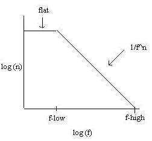
Figure 1 � Idea behind the time variable-light outputWhite noise was generated using a random number generator written in �C� adapted from [3]. The following excerpt of code is taken from the final program:
next = next * 1103515245 + 12345;
randomNum = (unsigned int)(next/65536) % 32768;
finalRandomNum = randomNum;
finalRandomNum = finalRandomNum/32767 - 0.5;(where �next� is an �unsigned long int�, and �finalRandomNum� is a �float�).
A uniformly distributed number between -0.5 and 0.5 is generated, with an average value of 0.
The following equations are used to calculate the new number to set the intensity of the light:
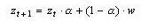
adapted from [4], where w is the white noise input and alpha, a, which serves as a �weight�, depending a smaller alpha placing more emphasis on the white noise on the next calculation. Zt is the input at time t, with an initially value of zero at t = 0.
Alpha is calculated as follows:
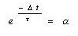
Alpha is calculated as specified because that is how much the signal would decay if the filter�s impulse response were exponential in with time constant of t. Dt is equally to the task 1 time of 64 milli-seconds, which determines how often the new number to set the intensity of the light in calculated.
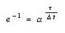
therefore,
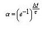
where tau, t is a time constant.
The final new number to set the intensity of the light is calculated as follows: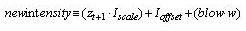
where Iscale increases the intensity of the light, with blow being a constant that scales raw white noise, and Ioffset shifts the intensity value. Ioffset is added since z will have a mean value of zero and we want the light to stay on. Iscale is the average value of the light, and blow adds in high frequency white noise that looks like flicker when you blow on the thermistor.
The software generated white noise and the low-pass filter controls specific hardware in the Atmel 90s8535 microcontroller used, such as the �Pulse Width Modulator� (PWM). When the PWM mode is selected, Timer/Counter1, the Output Compare Register1A (OCR1A) form a dual 8-bit (or 9-, 10-bit), free running, glitch-free and phase-correct PWM with outputs on the PORT D5 pin. [2]
The detection of breezes in the environment is accomplished using a thermistor.
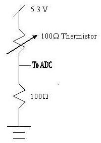
Figure 2 � Breeze Sensor Circuit
The principle behind a thermistor is that the resistance changes as a function of temperature. As the thermistor heats up, the resistance decreases, while the resistance increases with a decrease in temperature. Enough current will heat the thermistor above ambient temperature. The thermistor requires three milliwatts to heat it one degree Celsius. With this bias, the temperature is approximately 50 degrees Celsius. The maximum power rating of the thermistor is 0.100 watts.
Because it is self-heated, with a gentle breeze, the thermistor decreases in temperature, the resistance increases, and the voltage across the 100ohm and thus, the voltage read by the analog-to-digital converter decreases. The thermistor changes about 4% per degree. The ADC value is represented by 8-bits. Approximately three bits change when there is there is a 0.050-volt change after a breeze starts.
With the breeze sensors, I used a state-machine to change the system depending on whether the candle lies in a still-air or breezy environment.
State Diagram
The state diagram of the breeze sensor is shown in figure 3. The state diagram consists primarily of 6 states. I described the possible environment conditions to be still-air, or possible with a light or strong breeze blowing. The states �blow�, �light�, and �strong� contain an addition condition with checks whether there is a breeze that is strong enough to blow out the candle. When this condition occurs, the system shuts off the LED.A description of each state is given:
· �No Breeze� � There is currently no breeze blowing. This state asks, �Is the voltage above a certain threshold voltage, Vt?� If yes, enter state �Blow�, otherwise, there�s still no breeze.
· �Blow� � There�s a breeze blowing. This state asks, �Is the voltage change greater than VStrong?�, where VStrong is the minimum voltage change considered to be a strong breeze. If yes, enter state �Strong Breeze�, otherwise, it�s a light breeze, and so enter state �Light Breeze�.
· �Light Breeze� � There�s a light breeze blowing. This state asks, �Is the voltage change greater than VStrong?�. If yes, enter state �Strong Breeze�, otherwise, enter state �Light Helper�.
· �Light Helper� � There�s a light breeze blowing. This state determines if the voltage change is greater than Vt. If it is, it�s a light breeze, otherwise, there�s no longer a breeze blowing, so enter state �No Breeze�.
· �Strong Breeze� � There�s a strong breeze blowing. This state determines if the voltage change is greater than VStrong. If it isn�t, enter state �Blowing�. If it is, remain in current state.
· �Blowing� � There�s a strong breeze blowing. This state asks, �Is the voltage change above Vt?� If it is, enter state �Light Breeze� because the breeze is light, but if not, enter state �No Breeze� because there�s no longer a breeze blowing.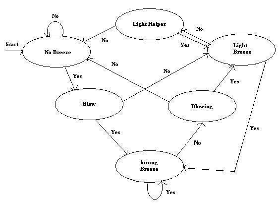
Figure 3 � State Machine for Breeze detection. The condition for the blownout candle is detected in the
strong breeze, light breeze and blow states. The system shuts off the LED and disables all
interrupts when the blowout condition is met.
I chose to use a state machine instead of a continuous controller for two main reasons. The main reason being that with a continuous controller, I would have to find a specific relationship between the four parameters in my candle. Time of course was another factor, since I wanted to have an easier time testing the complete circuit for robustness. Given more time, I most definitely would have used a continuous controller.The ADC value is read once for every 100 milli-seconds. Depending on the amount of voltage change, the �no breeze�, �light breeze�, or �strong breeze� parameters are loaded. I wrote specific �methods� in my code that are executed whenever any of the previous mentioned states are entered from a different state. The system interrupts are temporarily halted and the new parameters are loaded, which then the system resumes with the new parameters.
Before using the statemachine, a period of time for the system to settle is necessary. This is required since the thermistor, with a still-air time constant of approximately one second, needs time to heat up (and thus its resistance changes), and after it stabilizes, the ADC value is read in, which serves as the �zero-point�. After the �zero-point� is obtained, it takes approximately 200-300 milliseconds for a change in the ADC value to stabilize.
Testing the state-machine required reading the output from the microcontroller�s RS232 connection to a PC. The monitor displayed the strategically placed printout statements throughout my code via the microcontroller�s Universal Asynchronous Receiver and Transmitter (UART), which would tell me how much the voltage changed and which state the system is currently in. Thus, I was fully aware of what was going on in the system.
ImprovementsAfter completion of the original candle, several improvements were made, which include:1) improved flame dynamics using a statemachine
2) implementation using a continuous controller
3) new packaging
flame dynamics
The flame dynamics of the original version as described above did not handle extremely breezy environments well. The new state machine was altered to take into account extremely long breezes. The basic operating principle is simple. At startup, continuously compare the current ADC value to the last five ADC values, if there are at least three matches with the history table, the current ADC value becomes the "Vzero" value. The Vzero serves as a base to compare future voltage changes in the system. Previously, the original state machine waited five seconds before taking in a reading. The drawback of that approach is that if the thermistor wasn't sitting in a still air environment, the initial reading may not be accurate, thus, the system dynamics will be affected negatively.Now, why did i chose five previous values instead of more (or less)?. Four and fewer did not give a 'good' Vzero. I wanted the system to have as accurate of a Vzero value as possible, yet, not stall in the startup state on the condition when the ADC value bounces between two values. At initial startup, the thermistor heats up and the ADC changes in one direction only in a still air environment.
A specific state called "reheat" was added so that the thermistor was fully reheated before calculating another voltage change. This forced the system to take extremely accurate voltage changes. The downside of this approach is the the system must 'reset' to the Vzero voltage point, and this prevents the microcontroller from detecting continuously changing breezes in the environment. To remedy this, I replaced the state-machine with a continuous controller (see below)
The state diagram with improved dynamics is as follows:
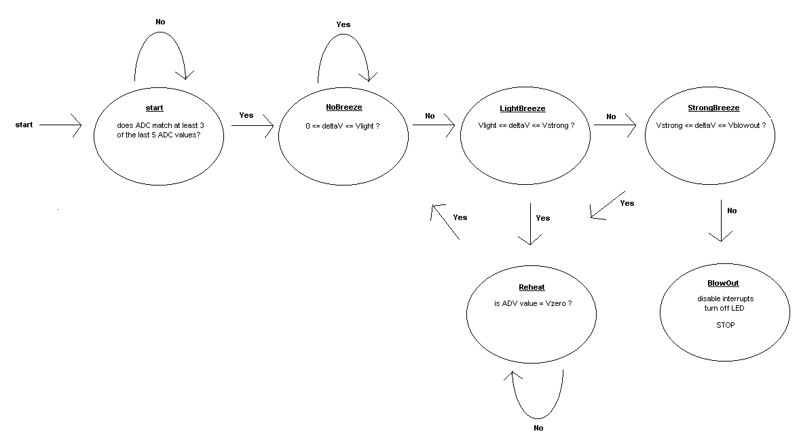
Figure 6 - State-Machine with improved dynamics. Notice the added reheat state.
The second improvement replaced the statemachine with a continuous controller. The continuous controller still begins exactly like the statemachine described above, with ADC readings and history comparisons. However, after the Vzero value has been obtained, we "continuously" read the ADC value. I found a relationship between the change in voltage and the four prime factors: I_offset, I_scale, alpha, and blow. These parameters were previously described. With increasing breeze strength, I_scale and alpha decreased, blow increased. I_offset was set to an average value to prevent the amplitude from going to zero.packagingThe advantage of using a continuous controller is that the limitations of the statemachine are eliminated. For example, we do not need to wait for the thermistor to fully reheat before rereading the ADC. Since we don't have a statemachine, the code is much simpler. The response of the system is also noticeably faster.
One common suggestion given by several people in Mudd Hall was that the candle would look even better if the circuitry and wiring were hidden from sight. Using a cardboard shipping tube approxiamately 2 inches in diameter, it was cut to about 7 inches in height. The circuitry and the batterypack are hidden inside, with the batteries sitting at the bottom to serve double duty as a stabilizing weight. Using white semi-glossy paint, I applied three coats so that the exterior looked waxy, which gives the added effect of looking like a real candle.A picture is worth a thousand words....so here's two!
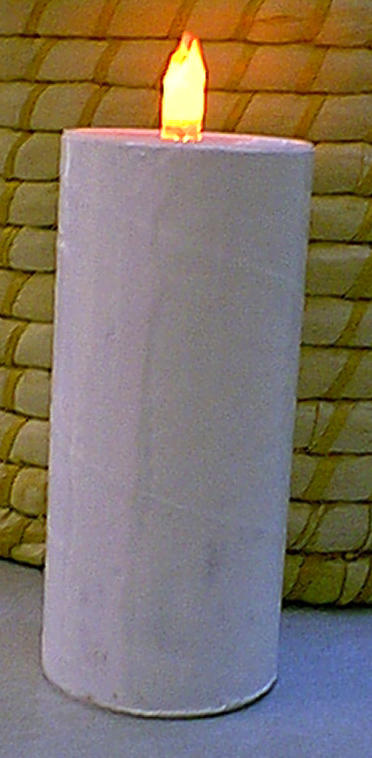
Figure 7 - The LED-candle 'burning' brightly!
(notice that it's an LED, and not a real flame)
(Side View)
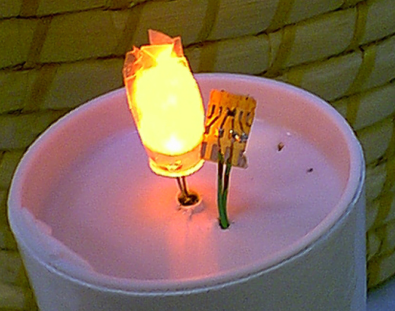
Figure 8 - The LED-flame with thermistor (the little black dot on the right)
(Top View)
candle.c (Original)
newcandle.c (Improved Statemachine)
continuous.c (Continuous Controller) hex file, coff fileAppendix A
Appendix B
Appendix C (candle.c)
Appendix D (lorenzEuler.m)1. Fujiwara, O. and Kiyozawa, Y., �Spectral Model and Statistical Parameters of Biostimulation with 1/f Fluctuation Power,� in Electrical Engineering in Japan, vol. 121, no. 4, 1997
2. Atmel 90s8535 Manual, rev. 1041C-11/98
3. Kernighan, B. and Ritchie, D., The C Programming Language: ANSI C Version, 1998
4. Starns, S., Digital Signal Analysis, p.158, 1983Each of the stated objectives has been met. The packaged candle looks convincingly real, with time variable light output, breeze sensors, and real-time response.
Time-variable light output was achieved by using white noise and a low pass filter. The breeze sensor was constructed using a thermistor and an ADC.The final candle looks convincingly real according to several people in Mudd Hall. If time permits, I�ll measure the output spectrum. However, there�s always room for upgrades. One such upgrade would involve sensitivity controls. Depending on whether a certain say, button is pushed, the candle may be more sensitive to breezes in the environment. Another change would involve changing white noise to gaussian white noise. I believe I will implement these changes on my own time.